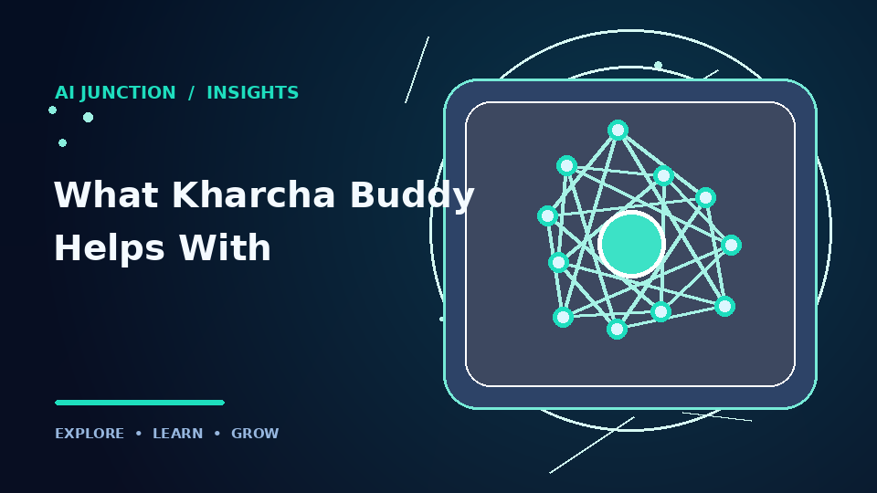
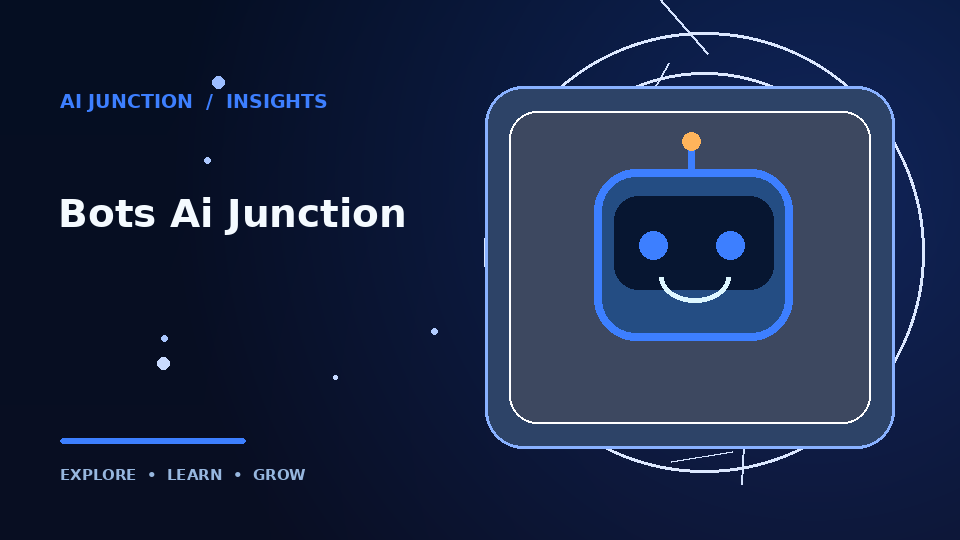
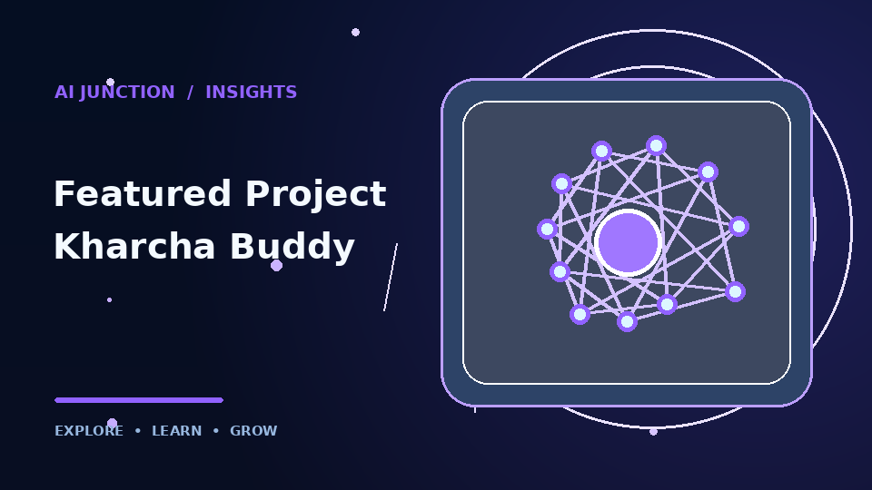
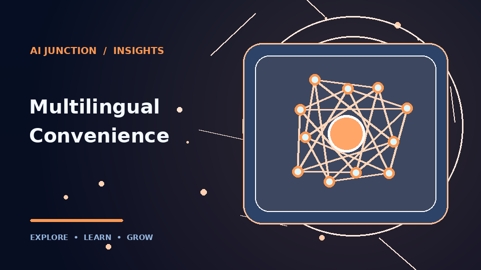
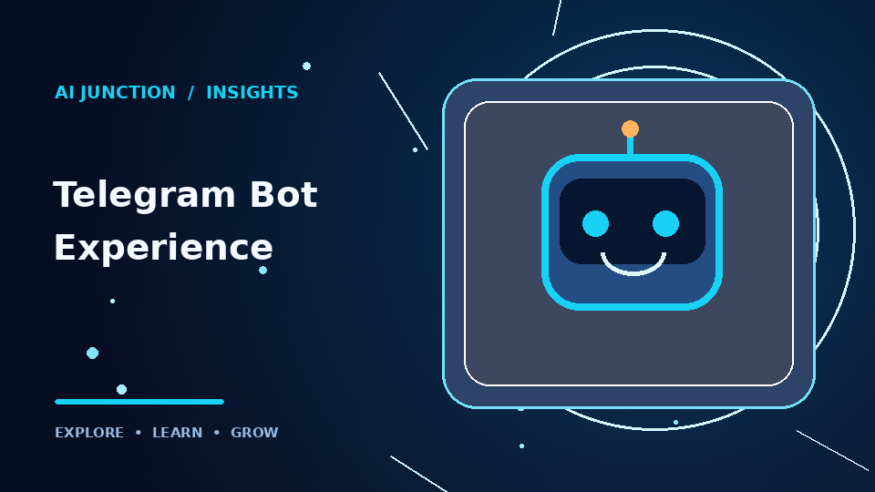
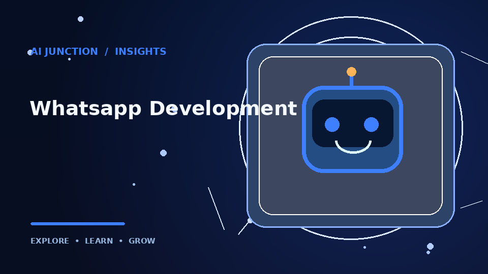

TRACK
Fast daily entries
Capture transactions using short, natural-language messages.
Explore lightweight bots designed to make everyday work simpler. Features and access depend on the specific project and platform.


A conversational expense and income tracker designed for quick daily entries and simple spending summaries.
Telegram bot is an existing project. WhatsApp features are under development/testing; availability may vary.
The goal is less manual work and easier tracking.

Capture transactions using short, natural-language messages.

Workflows designed for English, Hindi and Gujarati users.

Simple menu and report flows for users who prefer messaging apps.

We are exploring WhatsApp-based expense tracking, language selection and reports.
This is not presented as a publicly available paid service yet. We will share verified availability when the experience is ready.
Follow AI Junction for product announcements, feature previews and access updates.
Follow AI Junction